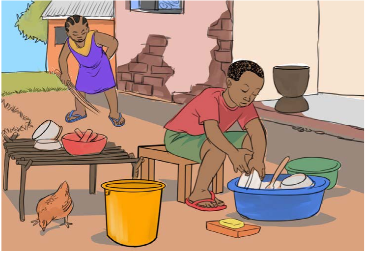
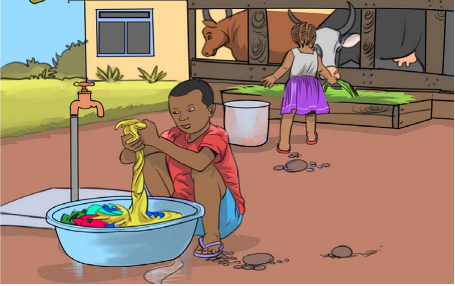
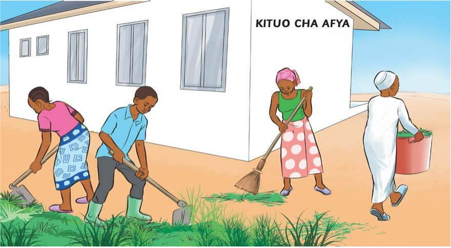

Zoezi la 3
Zoezi la tatu
1. Eleza matukio yanayoonekana kwenye picha (a), (b), na (c).

Mtoto ameketi akiosha vyombo kwenye beseni, huku mwanamke akifagia ua wa nyumba. Vyombo vimepangwa karibu nao.

Mtoto mmoja anafua nguo kwenye beseni lenye maji, huku mtoto mwingine akiwapa ng’ombe majani zizini.

Wanajamii wanne wanashirikiana kusafisha mazingira ya kituo cha afya. Wawili wanakata nyasi, mmoja anafagia na mwingine anaondoa taka.
2. Taja shughuli unazofanya kwa kushirikiana na watu wengine unapokuwa: